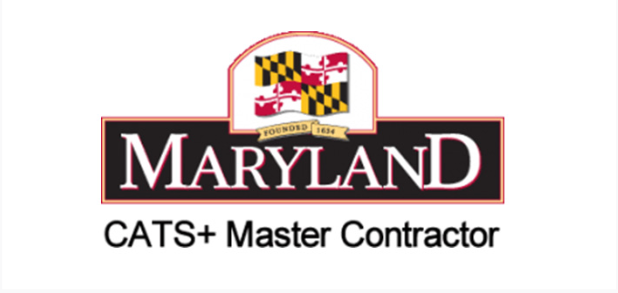

Technical Services
Enterprise Service Provider support; Web and Internet Services; Software Engineering; Systems and Facilities Management and Maintenance; and Information System Security.

GCS provides a broad range of IT consulting and technical services to Maryland State agencies and authorized entities through the Consulting and Technical Services Plus master contract.
Maryland CATS+ is a multiple-award, indefinite-quantity master contract administered by the Maryland Department of Information Technology. It streamlines acquisition of qualified IT consulting and technical services for State agencies and authorized entities.
GCS supports modernization, cybersecurity, enterprise management, software engineering, business transformation, and technical operations through awarded functional areas.
Enterprise Service Provider support; Web and Internet Services; Software Engineering; Systems and Facilities Management and Maintenance; and Information System Security.
IT Financial and Auditing Consulting; IT Management Consulting; Business Process Consulting; and Documentation/Technical Writing.
Application, web, internet, modernization, and technical development services.
Systems, facilities, service provider, and maintenance support.
Cybersecurity, compliance, risk, and information assurance services.
IT management, financial, auditing, process, and technical writing support.
Support aligned to mission priorities, operational requirements, and measurable outcomes.
ISO 9001:2015-certified quality management and disciplined performance oversight.
HUBZone and WOSB certifications support agency small business participation goals.
More than two decades supporting defense and civilian agency missions.
CATS+ is a Maryland DoIT multiple-award master contract for IT consulting and technical services.
GCS holds multiple functional areas covering software, web, enterprise operations, security, management consulting, business process support, and technical writing.
Maryland State agencies and other authorized entities may use CATS+ in accordance with State ordering procedures.
Contact contracts@globalcommserv.com or 504-308-1308.
Contact GCS to discuss CATS+ functional areas, acquisition options, and technical support needs.